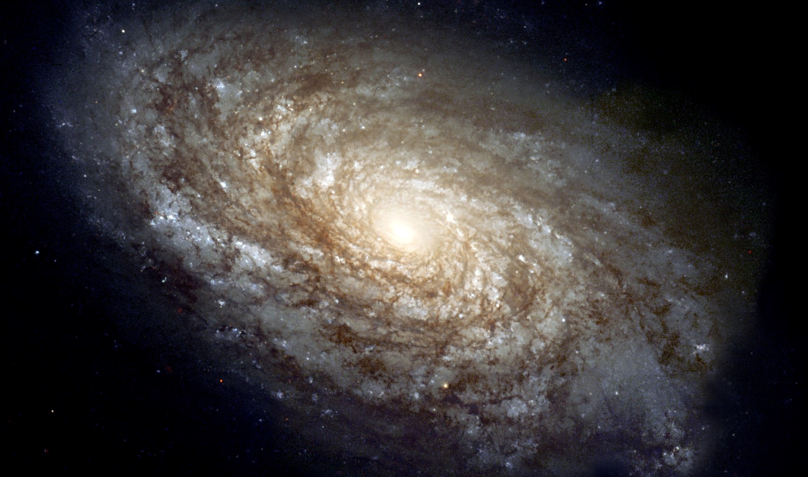

Have you ever gazed up at the night sky and wished to uncover the deep mysteries within? Well with Beyond the Sky LLC, now you can! With five different and immersive trip packages to choose from, we’re here to help you make your dream of exploring the solar system come true. From the Stratosphere to the Kuiper Belt, there’s an option for every aspiring astronaut in your crew. So what are you waiting for? Start your expedition today!
Why explore with us? Our out of this world ships come with every amenity your heart could desire. With a variety of experiences for every one of your crewmates, you’ll never encounter a dull moment while on board! Kids can enjoy endless adventures with the seemingly never-ending maze of climbable platforms, slides, and ropes of the zero-gravity playground, adrenaline junkies can take a stroll on our heart-pumping one-hundred-foot-long spacewalk, and scholars can immerse themselves in the mysteries surrounding them with one of our numerous astrophysics seminars–all after starting the day with an all-you-can-eat continental breakfast. You’ll be able to enjoy mouthwatering meals created by five-star molecular gastronomists, which will always be topped off with decadent dessert options. Grab your space gear and get ready to blast off from your nearest space port! The secrets of your interstellar destination of choice are waiting to be uncovered…